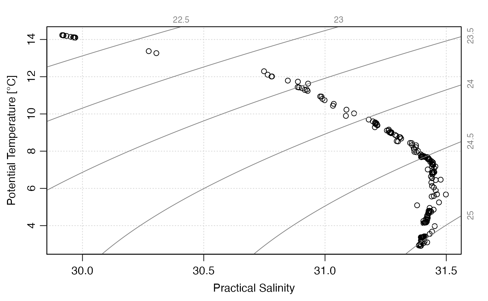
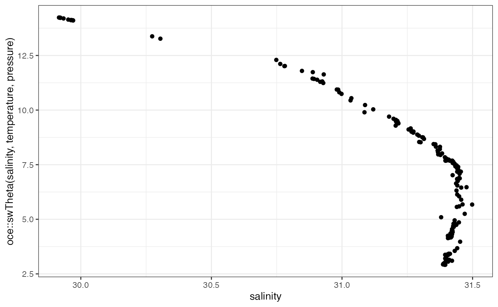
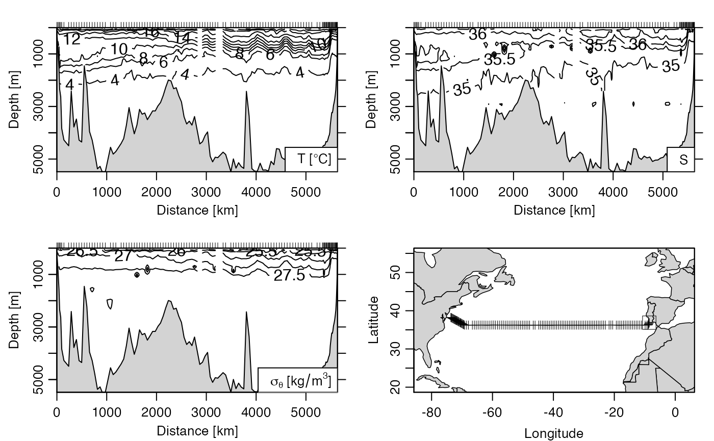
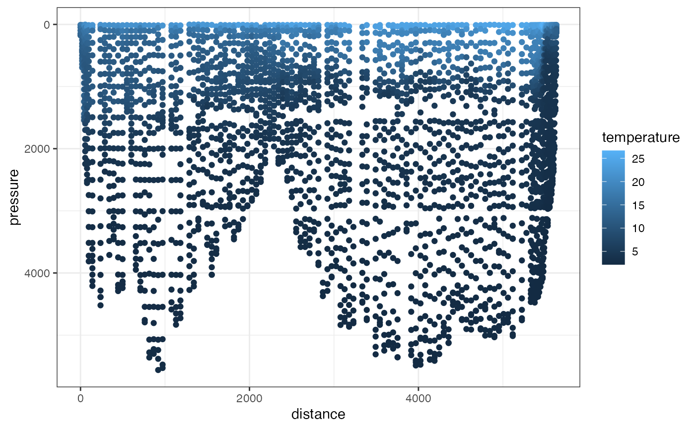

CTD objects
data(ctd, package = "oce")Temperature/Salinity
oce::plotTS(ctd)
ggplot(ctd, aes(salinity, oce::swTheta(salinity, temperature, pressure))) +
# annotation_isopycnal() +
geom_point()
Section objects

ggplot(section, aes(distance, pressure)) +
geom_point(aes(col = temperature)) +
scale_y_reverse()